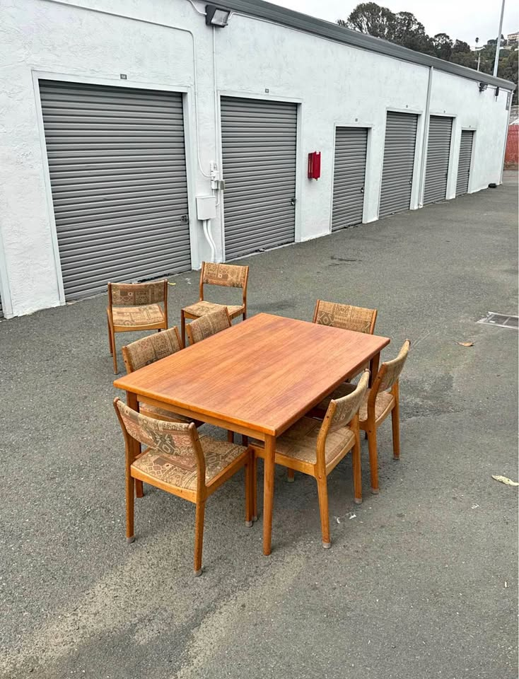
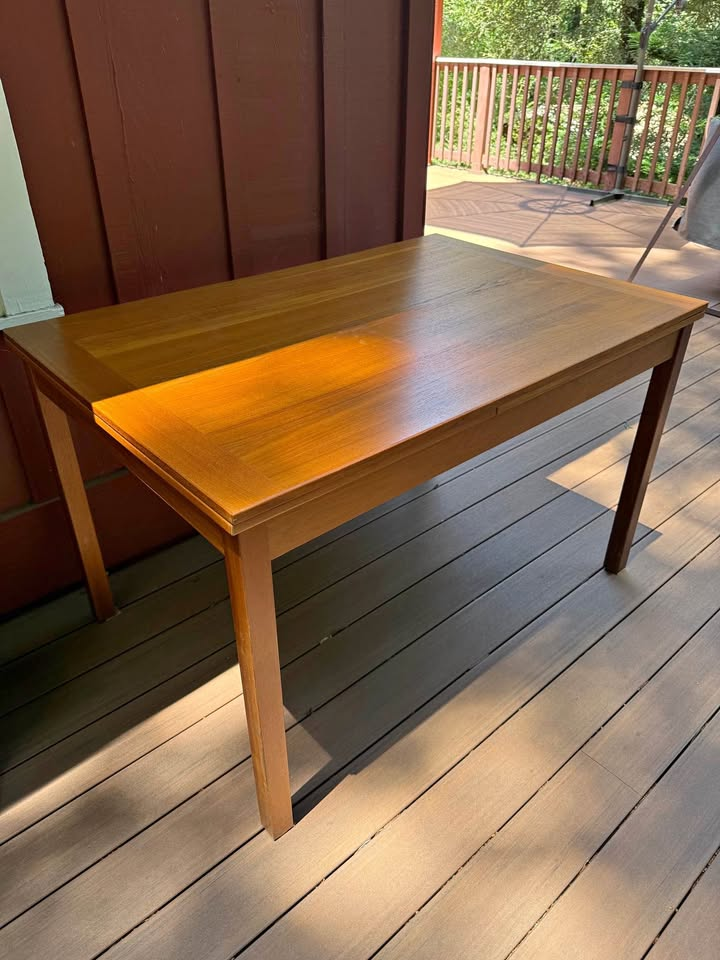
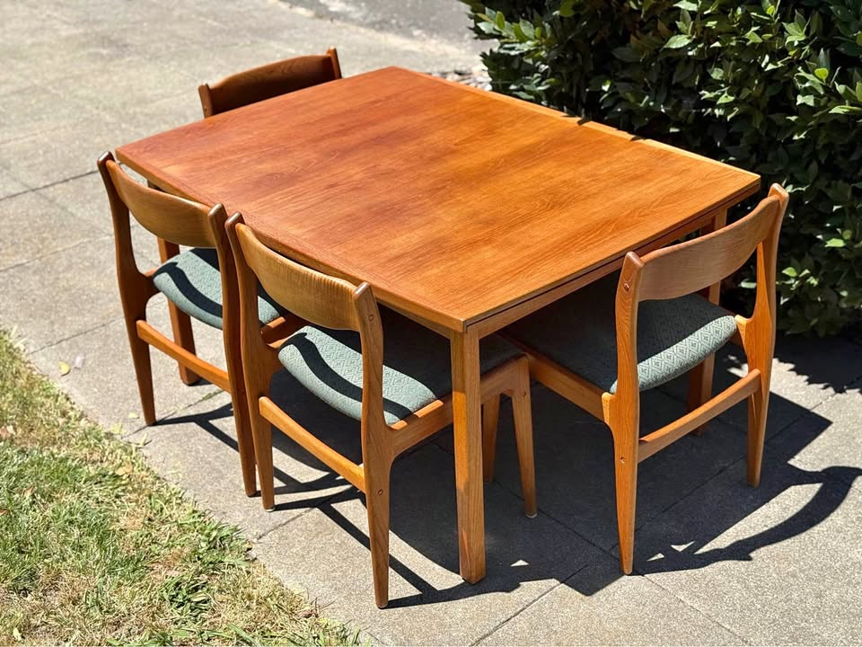
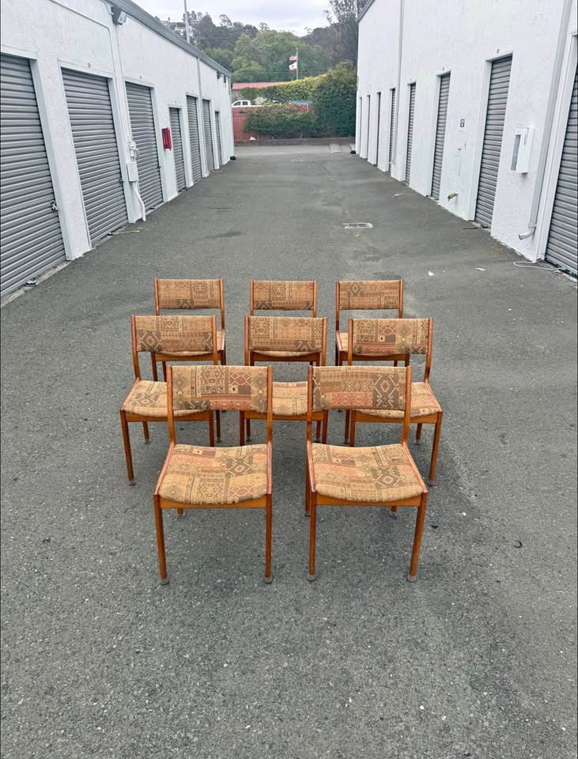

461 Anderson — Dining Table Watch
Mid-century modern · extendable to seat 8 · Danish teak/walnut preferred · driveable from the Bay Area
Updated August 1, 2026Current, click-verified, in-budget picks only · ★ value = price vs. quality
⚡ Look at right away
- Four in-budget picks are live — all click-verified today.
- NEW today — a priority-maker find: a Danish Ansager vintage teak dining table, $1,200 (Facebook, San Francisco), listed ~5 hours ago. Ansager is a priority Danish maker; solid teak draw-leaf, four legs (confirmed in photo), clean listing with no price ambiguity, door pickup. One caveat — it extends to 86", the shortest of the board, so seating 8 is tight (clears the 84" floor but snug). Message before it goes.
- Still the strongest overall: the BRDR Furbo Danish Teak Dining Table, $935 (Facebook, Richmond) is still active — a Made-in-Denmark priority maker, solid teak, four legs, extends to 97". A named maker under $1K with the longest reach → top pick.
- Best price on the board: the Vintage Teak Extending Dining Table, $675 (Facebook, Walnut Creek) is still active — honey-teak, two matching draw-leaves, four legs, 51" → 90". Nothing beats it on price.
- Also live: the D-Scan Danish Teak Dining Table, $950 (Facebook, Emeryville), 54" → 94", four legs. Caveat unchanged: listed at $950 but the seller's text says "asking $1,250," and chairs appear in the photos — confirm price/scope first.
- Watchlist (over budget): a Gudme Møbelfabrik walnut expandable (priority maker, 63"→101½") sits on Craigslist at $2,995 (SF/Folsom, delivers) — worth watching for a price drop. A Niels Koefoed "EVA" teak just dropped $2,650 → $2,450 (Emeryville) but is still over budget.
- Both Craigslist and Facebook were swept. Ruled out this run: a $750 SF "sunset" teak (extends only 82¼" — under the 84" floor), a $1,700 San Leandro teak (near-duplicate of the $675 for ~$1,000 more), a $1,750 Novato "Danish modern with built-in leaves" (trestle base), a $150 SF "expandable" (not solid MCM teak), plus over-budget SF/Emeryville pieces, the $2,500 Skovby (pedestal), a $2,999 San Jose "conference" teak, and the usual American-made / UK-import sets.
Budget $1,000–$2,000 · extends to ≥84" · Danish teak/walnut/rosewood · four legs (no pedestal/trestle)
Tables · in budget

BRDR Furbo Danish Teak Dining Table — Made in Denmark
A Made-in-Denmark BRDR Furbo (a priority Danish maker) in solid teak, extending all the way to 97" for $935 — a named maker under $1K with the longest reach on the board. Exceptional value.

Vintage Teak Extending Dining Table
A honey-teak draw-leaf table extending to 90" on four legs for $675 — still the best price on the board by a wide margin. No named maker, but solid teak, clean lines, and well under budget.

Danish Ansager Vintage Teak Dining Table
A named Ansager (priority Danish maker) in solid teak, draw-leaf extendable, four legs, listed just hours ago with a clean, no-ambiguity listing. Fairly priced for the maker — the only knock is a shorter 86" reach.

Vintage Danish Teak Dining Table by D-Scan
A named 1970s D-Scan Danish teak with hidden matching-teak leaves that extends to 94", listed at $950. A real maker under $1K would be excellent value — the one caveat is a price/scope ambiguity to confirm.
⚡ Chairs — quick read
- Best match, buy with the table: a Set of 8 D-Scan teak chairs, $1,175 (Richmond) — every chair has its original D-Scan sticker, structurally sound, upholstery intact. Same Richmond seller as the BRDR Furbo table, so both come home in one trip (table + 8 chairs ≈ $2,110). At ~$147/chair it's the best per-chair price on the board. One caveat: the fabric is a dated tan/rust geometric weave — clean, but not the plain look you want, so plan to recover (~$200–400 for all 8).
- Heads up: the earlier alternative — a set of 8 Danish teak in plain fabric with free delivery ($1,600, San Rafael) — has sold and is no longer listed.
- Note: confirm active before driving out; the D-Scan set was click-verified this run.
Budget $1,200–$2,400 for six · MCM teak/walnut that coordinates with the table · easy, clean fabric · driveable / delivers
Chairs · sets of 6+ · in budget

Set of 8 D-Scan Teak Dining Chairs
Eight authenticated D-Scan teak chairs — original maker sticker under every one — at ~$147/chair, the best per-chair price on the board. Same Richmond seller as the BRDR Furbo table, so table + 8 chairs comes to about $2,110 in one pickup.